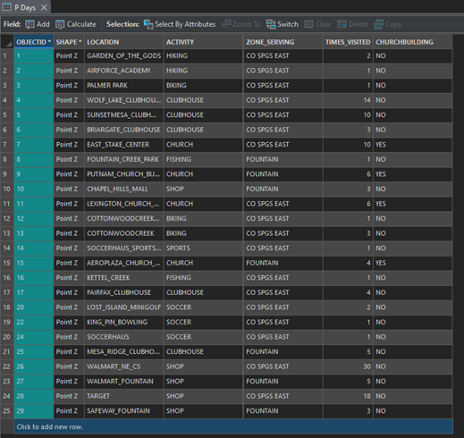

GIS Coursework / Week 03
Hometown Map

Overview
A personalized map plotting the places I visited on preparation days in Colorado Springs while serving a mission there, categorized by activity type.
Process
Built an attribute table of locations and activities, then symbolized each with distinct pushpin colors so the pattern of activities reads clearly at a glance.
